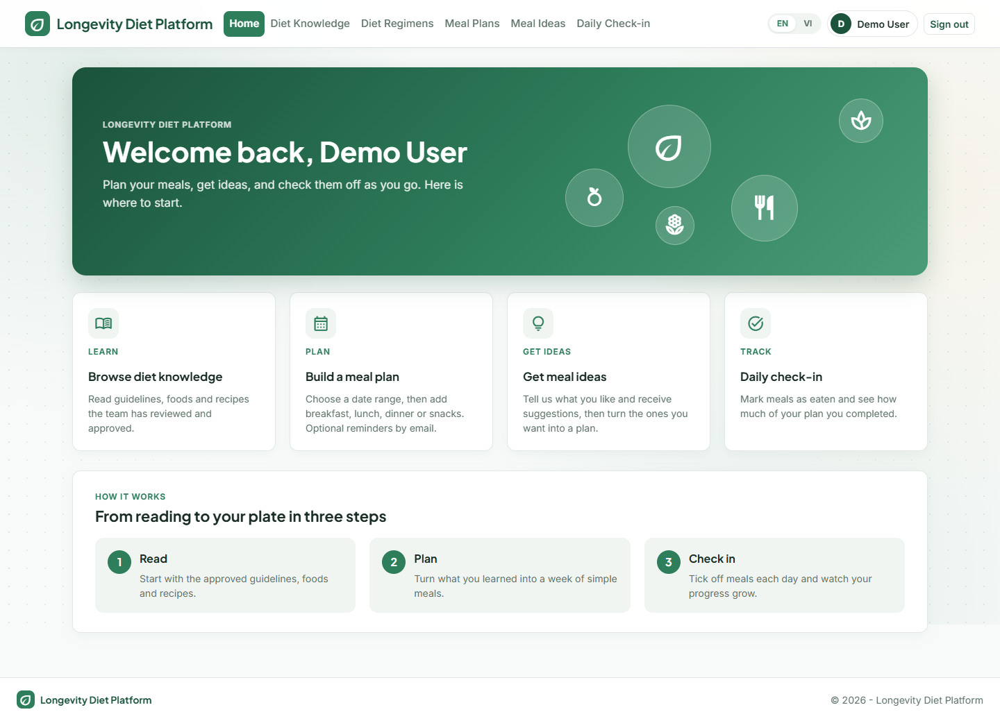
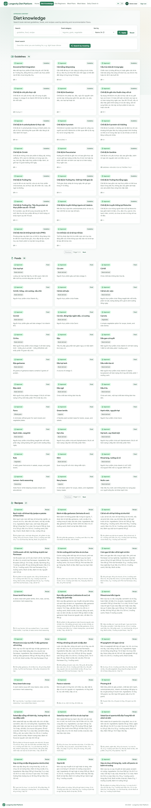
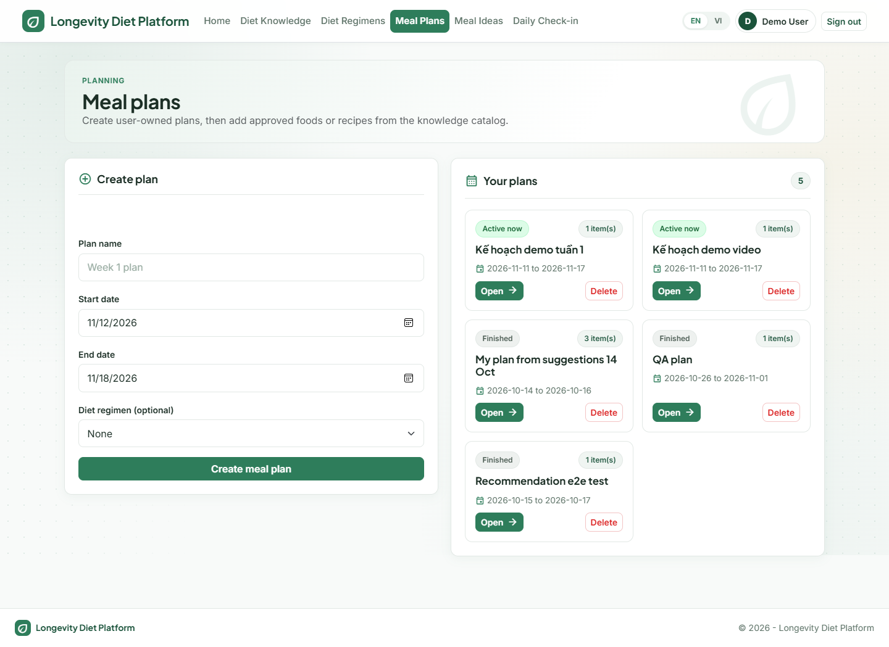
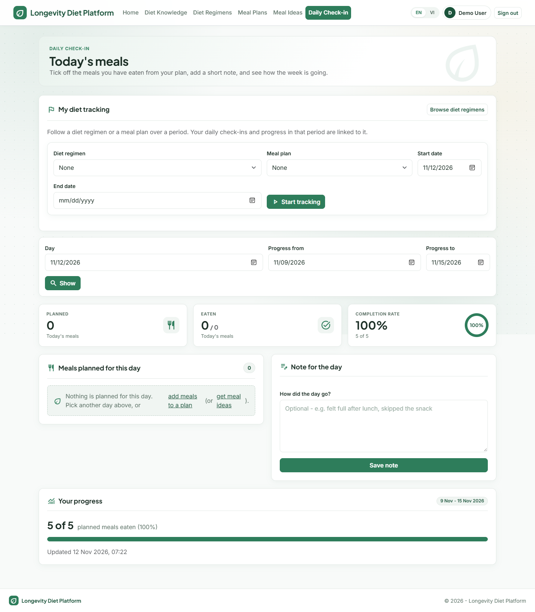

| Document | Project Proposal |
| Version | 1.0 (2026-11-12) |
| Course | PRN232 — Building Cross-Platform Back-End Application With .NET |
| Team | [Team name — members and student IDs] |
| Lecturer | [Lecturer name] |
Many people want to eat in a way that supports long-term health, but guidance from a book is hard to apply every day: readers must translate chapters into meals, remember what to eat, and see whether they are keeping up. Generic nutrition apps do not follow one trusted source, and AI chat tools can mix in unverified or medical-sounding advice.
Longevity Diet Platform turns the principles of the book The Longevity Diet into a practical web application. An Admin loads a legally obtained copy of the book; the system extracts candidate knowledge that the Admin must review and approve. Users then browse approved guidelines, foods, recipes and regimens, build meal plans, receive email reminders, ask for AI-assisted meal ideas that rely only on approved content, and track daily progress.
| Actor | Features |
|---|---|
| User | Register / login; browse and search guidelines, foods, recipes, regimens; smart (semantic) search; save eating preferences; create meal plans with scheduled meals and email reminders; request AI meal ideas and accept them as a plan; start/finish diet tracking; mark meals as eaten; view daily and period progress; English / Vietnamese interface. |
| Admin | Manage guidelines, foods (with nutrition facts), recipes (with steps), categories and regimens; activate/deactivate content; upload book PDF/TXT; review, approve or reject generated candidates; rebuild the semantic search index. |
Medical diagnosis or treatment, disease or lifespan prediction, generic nutrition database, mobile app, payment, social networking, wearable integration, media storage, Kubernetes.
The system is made of 15 containers: a Web UI, an API Gateway, four REST microservices (Identity, Diet Knowledge, Meal Planning, Tracking), two internal services (Recommendation, Notification), a Notification Worker, RabbitMQ and five PostgreSQL databases (four business databases plus a pgvector database). Every service owns its data; services cooperate through REST, one gRPC call and RabbitMQ messages.
| Concern | Technology |
|---|---|
| Language / platform | C# on .NET 9, ASP.NET Core Web API and MVC |
| API gateway | YARP reverse proxy |
| Security | JWT Bearer, roles User / Admin, PBKDF2 password hashing |
| Data | PostgreSQL 16, EF Core with migrations, pgvector for embeddings |
| Messaging | RabbitMQ (durable queues, dead-letter queues, transactional outbox) |
| Synchronous internal call | gRPC (Tracking → Notification) |
| Background work | .NET Worker Service, hosted services |
| External providers | Google Gemini (AI), Brevo (email) — both optional with safe fallbacks |
| Quality | xUnit with EF InMemory, Swagger/OpenAPI, global error handling, shared response envelope |
| Delivery | Docker, Docker Compose |




| # | Phase | Outcome | Status |
|---|---|---|---|
| 1 | Scaffold | Solution, layered projects, Docker Compose, health endpoints, contracts | Done |
| 2 | Identity & Diet Knowledge | Auth, roles, CRUD, search, seed data, book ingestion and review | Done |
| 3 | Meal Planning & Tracking | Plans, items, reminders, progress, gRPC notification | Done |
| 4 | Messaging & AI | RabbitMQ topology, Recommendation Service, Notification Worker, outbox | Done |
| 5 | Web UI | MVC UI via gateway, English/Vietnamese, redesigned interface | Done |
| 6 | Revised database design | Categories, nutrition, regimens, user profile, diet tracking, VectorDb (lecturer feedback) | Done |
| 7 | Hardening & documentation | Reliability fixes, time rules, 94 tests, C4/ERD/SRS/business rules | Done |
.drawio files.| Risk | Impact | Mitigation |
|---|---|---|
| Gemini or Brevo unavailable / no API key | AI text and email missing | Safe local recommendation fallback; email payloads logged in development |
| AI returns unsafe or medical-sounding text | Breaks product boundary | Safety policy filter, approved-only context, disclaimer |
| Broker outage loses messages | Missing reminders | Transactional outbox with retry; durable queues; dead-letter queues |
| Book copyright | Legal exposure | Admin-only upload of a legally obtained copy; PDFs and chunks never public or committed |
| Poor-quality extracted knowledge | Wrong guidance | Mandatory human review; source chapter/page required on approval |
| Time-zone mistakes in reminders | Reminders at wrong hour | Configurable UTC offset; past-time validation |
The project gives users a safe, source-controlled way to apply a diet book in daily life, and gives the course a complete showcase of distributed-system techniques: independent services, secure access, synchronous and asynchronous communication, reliable background processing and full documentation. We request approval to finalise and demonstrate the platform as described.